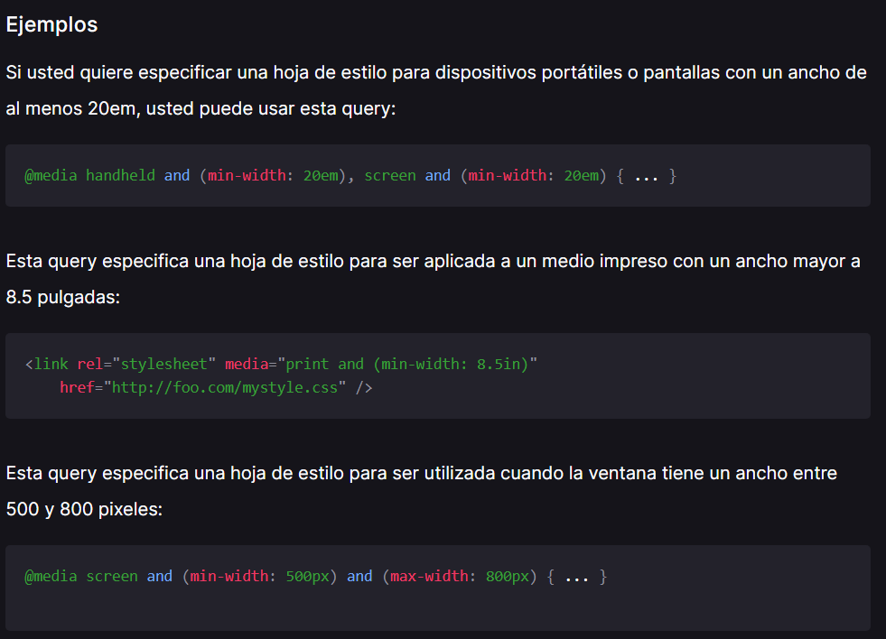

Transiciones
Background
Font-size
Color
Line-height
Border-radius
Box-shadow
Opacity
Border
Margin
Padding
Transformaciones
Scale
Rotate
Translate
Skew
SkewY
SkewX
TranslateX
TranslateY
Perspective rotate
Perspective rotate
Matrix
Media Queris
Las media queries consisten de un tipo de medio opcional y una o más expresiones de características de medios. Varias consultas se pueden combinar utilizando operadores lógicos. No distinguen entre mayúsculas y minúsculas.
El resultado de la consulta es "verdadero" cuando el tipo de medio (si se especifica) coincide con el dispositivo en el que se está mostrando el documento y todas las expresiones en el media query son "verdaderas". En este caso, se aplica los estilos correspondientes, siguiendo las reglas usuales de cascada.
